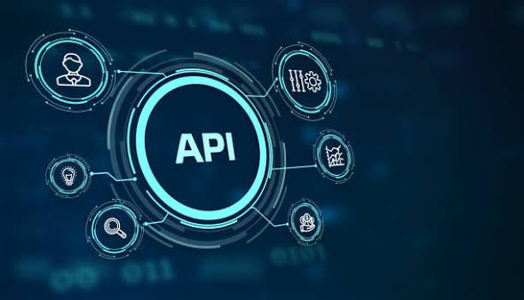

Desarrollo Web
- WordPress, Divi, HTML, CSS y JavaScript.
- Diseño responsive y mejora de experiencia de usuario.
- Optimización SEO y rendimiento web.

Backend y APIs
- Python, FastAPI y Django.
- Diseño e integración de APIs REST.
- Autenticación, modelos y bases de datos.
- Desarrollo de lógica de negocio backend.

Automatización
- Automatización de procesos con C# y Power Automate.
- Integración con SharePoint y Dataverse.
- Tratamiento de ficheros y validaciones.

Datos
- Gestión, limpieza y transformación de datos.
- Excel, SQL y documentación técnica.
- Automatización de reportes y cargas.

Herramientas
- GitHub, VS Code, Canva y Overleaf.
- PageSpeed, GTmetrix y herramientas SEO.
- Trabajo con documentación y control de versiones.

Competencias personales
- Capacidad de aprendizaje y adaptación.
- Comunicación, responsabilidad y trabajo en equipo.
- Orientación a la mejora continua.